Reverse之路
知识点
OD
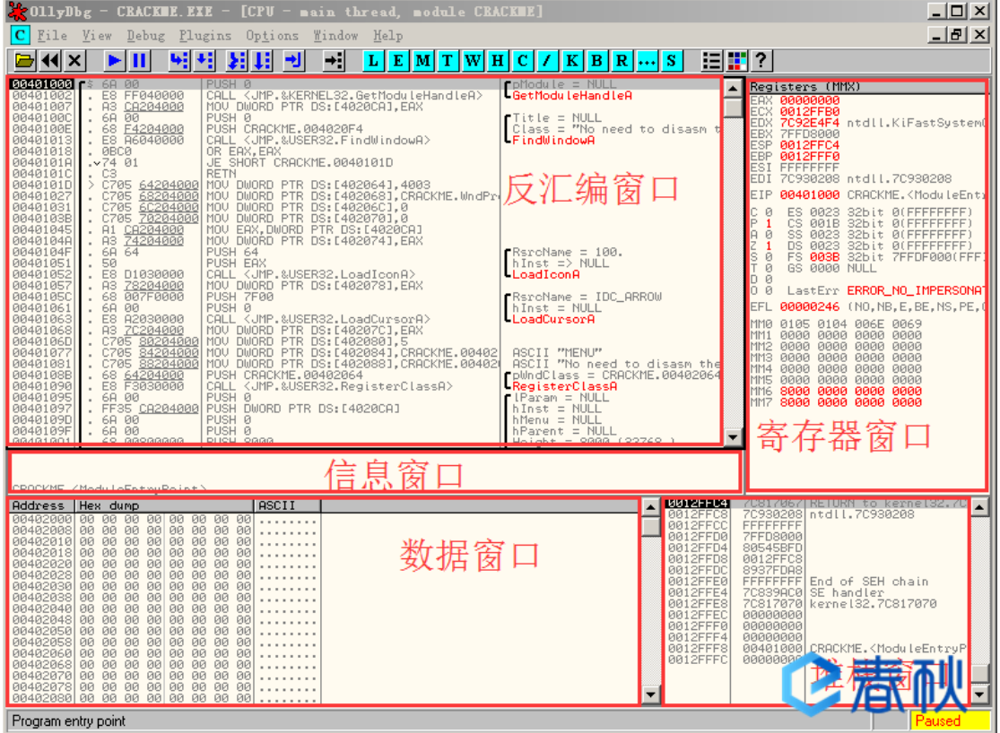
1.我们点击反汇编窗口的随意一行代码，右键->Go to->Ｅxpression(快捷键Ctrl+G)，在窗口中输入地址77D507EA，回车会发现此时窗口已经跳转到该地址了。
2.Ctrl+F2重新载入程序
3.通常 OllyDbg 显示程序的某些部分时是不正确的，错误的将可执行代码解释为数据，此时我们可以在反汇编窗口中右键->Analysis -> Remove analysis from module 手动删除分析结果
4.反汇编窗口右键->Analysis->Analyse code（快捷键Ctrl+A）重新获得这些分析信息
5.快捷键：
F7 单步步入。执行一行代码，遇到 CALL 等子程序时会进入其中，进入后首先会停留在子程序的第一条 指令上。
F8 单步步过。执行一行代码，遇到 CALL 等子程序不进入其代码。
F2 按F2在选中行设置断点，再次按 F2 删除断点。
F9 黑色表示当前程序运行到的位置，按F9运行调试程序，直到遇到断点停止运行。
F4 运行到选定位置。作用就是直接运行到光标所在位置处暂停。一个是运行到断点，一个是鼠标点击的地方暂停
一些函数
memset：初始化函数
memset是一个初始化函数，作用是将某一块内存中的全部设置为指定的值。
void *memset(void *s, int c, size_t n);
s指向要填充的内存块。
c是要被设置的值。
n是要被设置该值的字符数。
返回类型是一个指向存储区s的指针。
strncpy() ：字符串复制
char *strncpy(char *dest, const char *src, size_t n)
str 所指向的字符串复制到 dest，最多复制n个字符，当src长度小于n时，dest剩余部分用空字节填充
trncpy函数在进行字符串拷贝时，因为会复制源字符串的前几个字符，所以可能会在目标字符串中留下没有被赋值的空字符(‘\0’)。因此，在使用strncpy函数时，应该在目标字符串后手动添加一个空字符以保证字符串的完整性。
strcpy()：字符串复制
C 库函数 char *strcpy(char *dest, const char *src) 把 src 所指向的字符串复制到 dest。
需要注意的是如果目标数组 dest 不够大，而源字符串的长度又太长，可能会造成缓冲溢出的情况。
与strncpy()的区别是：在于对目标字符串长度的处理方式。
strcpy函数不会检查目标字符串的长度，它会一直复制源字符串，直到遇到’\0’为止。如果源字符串比目标字符串长，就会发生内存越界的错误。
而strncpy函数会先检查目标字符串的长度，如果目标字符串的长度小于等于源字符串的长度，则会将源字符串的前几个字符复制到目标字符串中，并在结尾处加上’\0’；如果目标字符串的长度大于源字符串的长度，则会将源字符串全部复制到目标字符串中，并在结尾处补充’\0’以保证字符串的完整性。因此，strncpy函数可以避免发生内存越界的错误。
malloc()：动态分配内存空间
void* malloc (size_t size);
size 为需要分配的内存空间的大小，以字节（Byte）计
strcat(a,b)将两个char类型连接
赋值给a。d和s所指内存区域不可以重叠且d必须有足够的空间来容纳s的字符串
OEP,IAT
什么是OEP
oep指的是original entry point（原始进入点，就是程序入口啦），脱壳就是为了找到正确的oep
IAT是啥
逆向工程核心原理：import Address Table （导入表），库函数知道不？函数名知道不？那玩意儿怎么在计算机中定位的？当 PE 文件载入内存时，windows 加载器会定位所有导入的函数或数据将定位到的内容填写至可执行文件的某个位置供其使用，而这个操作是需要借助导入表来完成的。现在不需要关心导入表干了嘛，你只要知道这玩意儿不能错就行。
EBP,ESP
寄存器EBP指向当前的栈帧的底部，寄存器ESP指向当前的栈帧的顶部。
ESP指示栈区域的栈顶地址，某些指令（PUSH、POP、CALL、RET)可以直接用来操作ESP (栈区域管理是程序中相当重要的部分，请不要把ESP用作其他用途)。 EBP表示栈区域的基地址，函数被调用时保存ESP的值，函数返回时再把值返回ESP，保证栈不会崩溃（这称为栈帧（Stack Frame）技术)。
API
API（Application Programming Interface,应用程序编程接口）是一些预先定义的函数，目的是提供应用程序与开发人员基于某软件或硬件得以访问一组例程的能力，而又无需访问源码，或理解内部工作机制的细节。
DLL
动态链接库（Dynamic Link Library 或者 Dynamic-link Library，缩写为 DLL），是微软公司在微软Windows操作系统中，实现共享函数库概念的一种方式（这些库函数的扩展名是 ”.dll”、”.ocx”（包含ActiveX控制的库）或者 “.drv”（旧式的系统驱动程序））。动态链接提供了一种方法，使进程可以调用不属于其可执行代码的函数。
UPX
进行手动脱壳的操作。 手动脱壳，需要找到目标程序的OEP，而最简单的手动查找的策略就是查找尾部跳转指令。这条指令是从脱壳存根向OEP跳转的。通常情况下，它是一条jmp指令，但是恶意代码作者也会使用ret指令来逃避检测。通常，尾部跳转指令是一串无效字节前的最后一条有效指令。填充这些字节的目的是为了保证区段中的字节对齐。
Classes.dex
classes.dex是Android应用程序运行的核心文件之一，也是Dalvik虚拟机的执行文件。该文件包含了应用程序的所有Java代码和应用程序使用的资源（如图片、文本、布局等）的编译后的字节码，以及应用程序依赖的库文件。
在构建Android应用程序时，所有Java源代码都会被编译成Dalvik虚拟机可执行的字节码，并打包成一个dex（Dalvik Executable）文件。这个dex文件被命名为classes.dex，在安装应用程序时被存储在应用程序的APK（Android Package）文件中。当用户安装并打开应用程序时，Dalvik虚拟机会加载classes.dex文件并执行其中的代码，从而实现应用程序的功能。
pyc文件
c 是 compiled 编译过的意思
是Python解释器在运行Python代码时自动生成的字节码文件。字节码是一种中间代码形式，可以在不同的平台和操作系统中运行，这使得Python代码在不同的机器上执行的速度更快。
“%02X”
“%02X”是C语言中的格式化输出字符串，用于将无符号十六进制整数输出为两位十六进制表示形式，其中：
%：格式控制字符的起始标记。
0：表示要使用前导零填充数字，如果该数字不足两位，则在前面加上0以凑够两位。
2：表示输出的整数要占用2个字符的宽度，如果不足2个字符，则在前面使用0填充。
X：表示以十六进制大写字母的形式输出整数值。
如果变量的值为10，则输出的结果为 “0A”。因为它使用两个字符表示16进制数10，且在前面使用0填充以凑齐两个字符。如果变量x的值为255，则输出结果为 “FF”。
BUU
2023.5.26
1.easyre
文件名：easyre.zip
日常查壳：
用PEiD查壳，然而显示的不是有效的PE文件，PEiD只支持检测32位的可执行文件，如果显示不是有效的[PE文件，说明你的可执行文件为64位，不能用PEiD检测
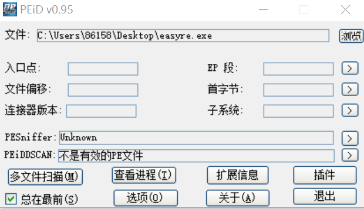
下面使用Exeinfo PE查看，Exeinfo相当于PEiD的升级版，可查看64位的可执行文件
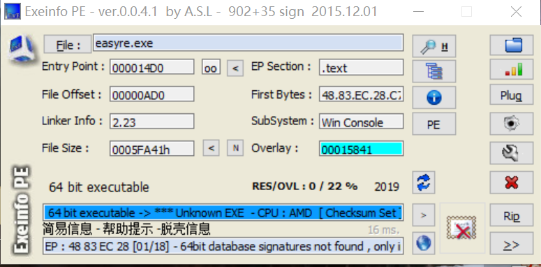
然后用ide64打开，直接Shift+F12查看字符串，直接看到flag，提交正确
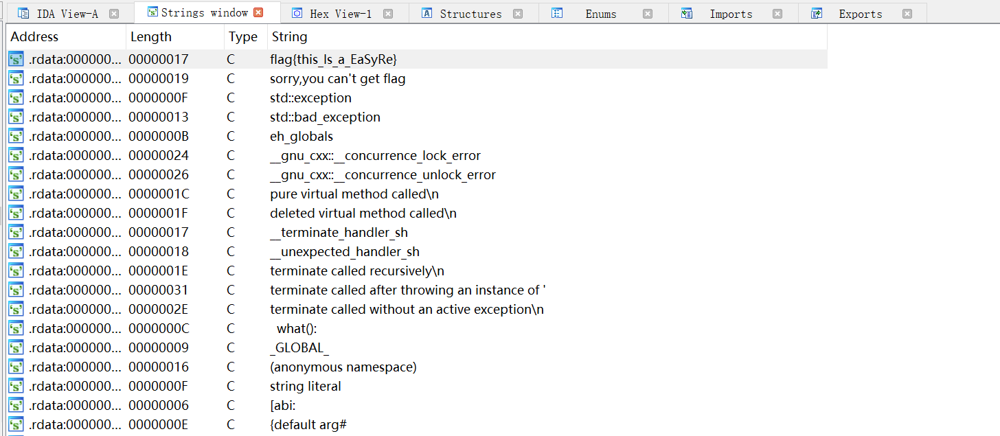
2.reverse1
文件名：b095c2d1-aa44-4e11-9ab5-137f66e1a48c.rar
日常查壳（Exeinfo PE）
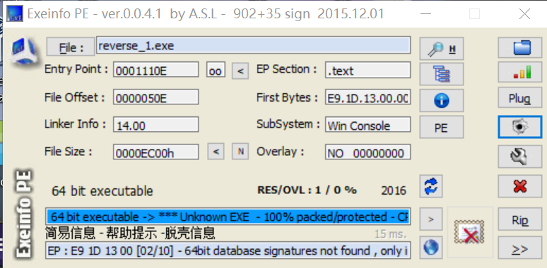
用ida64打开，查看字符串，this is the right flag!\n 这句很有可能是flag的地方，点进去，Ctrl+x（交叉引用）查看是哪段函数调用了该字符串，进入查看，F5反汇编
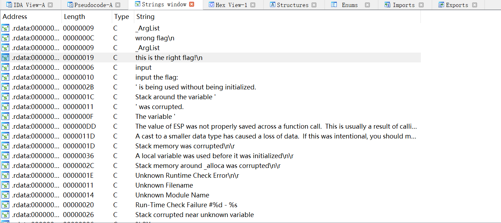
容易看出j_strlen()函数是获取长度的，搜了一下strncmp是比较函数，v3是比较前v3个字符，然后就定位到了if条件语句，有一个变换就是当字符的ASCII是111,也就是o的时候，换成ASCII是48的0，然后我就直接用aHell0W0rld提交了，不对，最后我才发现aHelloWorld只是一个变量名字，点击aHelloWorld进入查看字符串
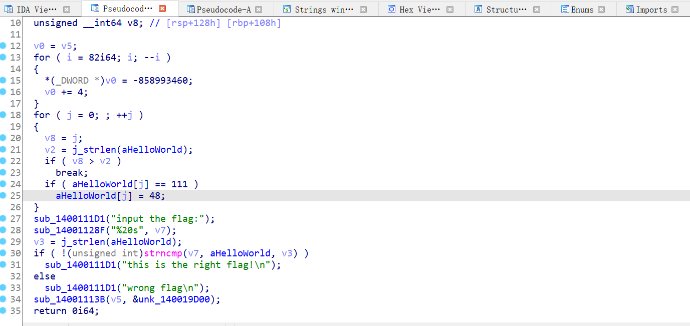
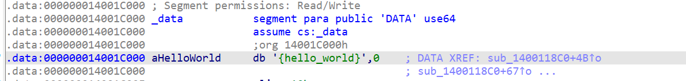
转换完提交就可。
3.reverse2
文件名：e8722e94-93d7-45d5-aa06-a7aa26ce01a1.rar
日常查壳（Exeinfo PE），貌似不是Win文件，不管，直接拖到ida64
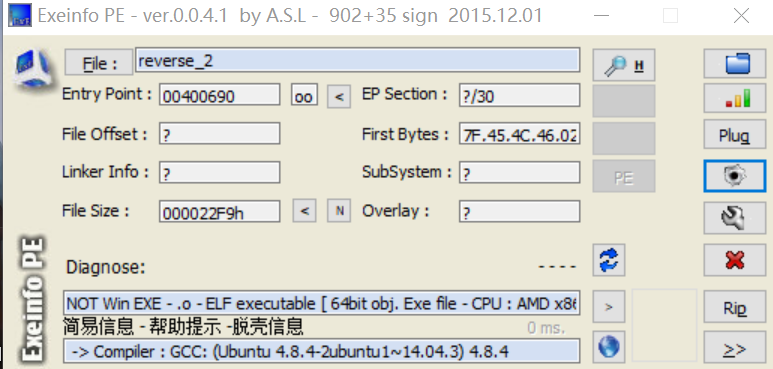
直接去看字符串，找到this is the right flag!，点进去查看，Ctrl+x，然后进入该函数，F5反汇编
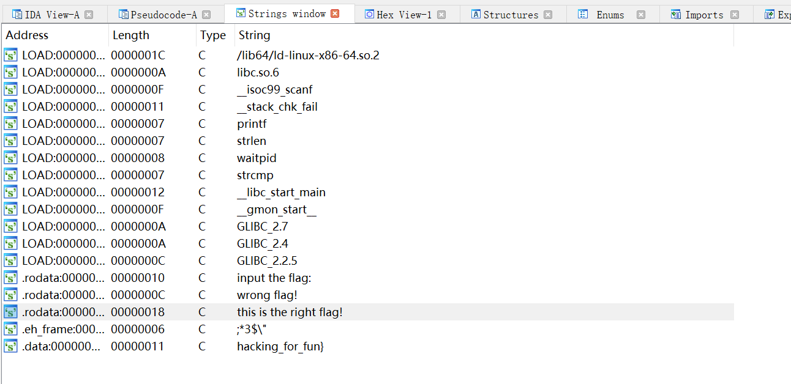
这个题和上个题目差不多，也是转换字符，找到flag，然后替换就可以了
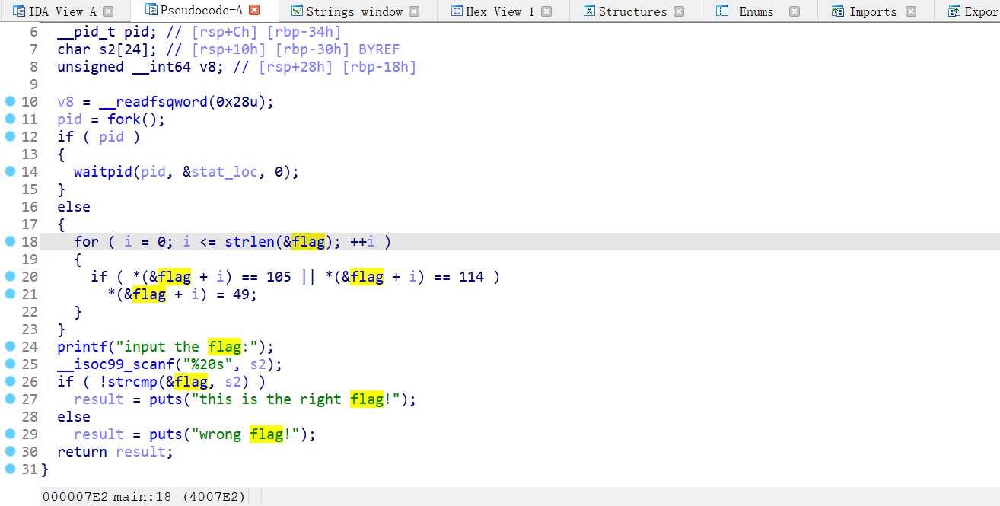
4.内涵的软件
文件名：70125468-0786-4705-bd91-87037f8f3e16.exe
觉得不太简单，至少不像前几题那样
日常查壳，不知道什么情况，先放到ida64看看
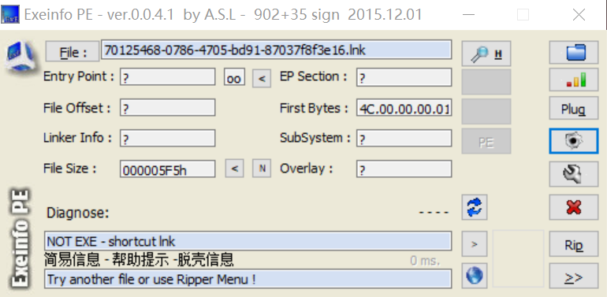
加载的二进制文件可以以各种模式进行反汇编。请选择所需的模式：
不清楚，就先用64位反汇编
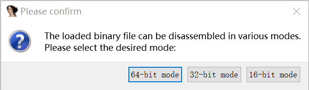
IDA无法自动识别入口点 因为没有二进制文件的标准。请转到您认为的切入点然后按“C”开始自动分析。
难道是有壳？但是也没查到啊。不清楚，往下看
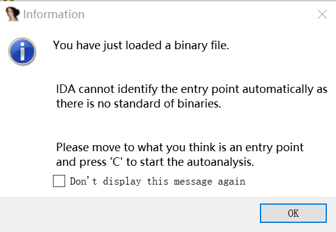
SOS
犯了一个很大的错误，我先是把exe文件加载到桌面快捷方式，然后用的快捷方式打开的，怪不得错了
再次查壳，32位，用ida32打开
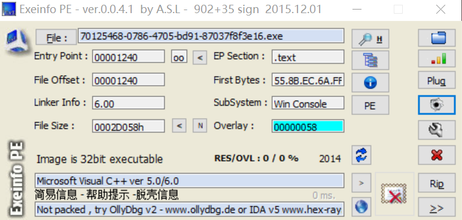
先去看字符串，貌似没看到直接关系的，看到了flag == 0 || flag == 1，然后点进去看看，然而并没有什么实质性的线索，然后我就去看main函数，转到了main_0，然后发现了一串字符串，感觉像，把开头改成flag提交，还真的是！
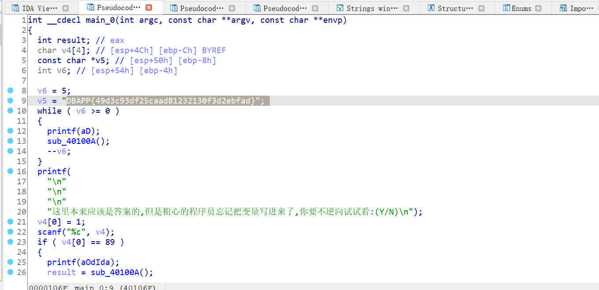
5.新年快乐
memset是一个初始化函数，作用是将某一块内存中的全部设置为指定的值。
void *memset(void *s, int c, size_t n);
- s指向要填充的内存块。
- c是要被设置的值。
- n是要被设置该值的字符数。
- 返回类型是一个指向存储区s的指针。
日常查壳，发现是upx加壳处理过的，upx是加壳工具能够压缩程序代码，减小程序体积

先说第一种用脱壳工具，在upx.exe文件目录下输入cmd，然后输入upx.exe -h，然后把需要去壳的文件拖入同一目录下，我直接脱壳没成功，先加壳之后脱壳就好了
加壳命令：upx file.exe
脱壳命令：upx -d file.exe
ida32打开，查看字符串，找到this is true flag!，进去查看，F5反汇编，直接发现了关键信息，还是字符串比较是否相等
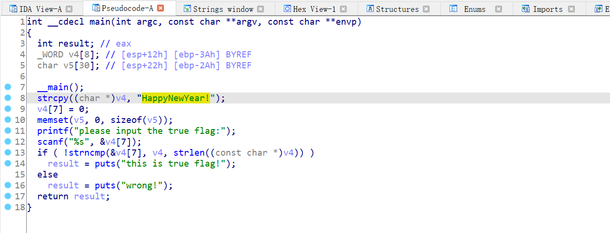
下面说手动脱壳，用的是x32dbg
加载后进去断点处查看，有pushad，跟随断点，在该处右键，选择在此处设置新原点，然后单步执行，当ESP发生变化时，右键，在转存中跟随，然后在数据窗口处右键，断点，硬件存取，字，然后运行，会在断点处停下来，上面就有popad，找到它下面第一个jmp，就是入口点了.
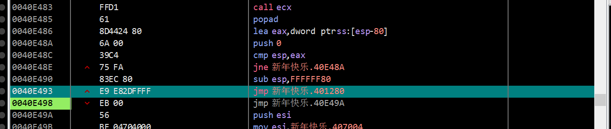
然后用这类似 S ,的插件
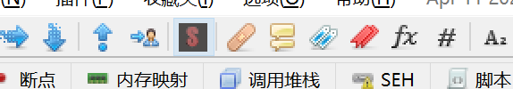
把OEP改成那个jmp跳转的地址，然后转储。然后在工具栏上点其他，选项，在”其他“那里点使用高级IAT搜索，接受，然后先点ITA自动搜索，之后再点获取导入，最后点修复转储，打开刚才保存的 新年快乐_dump.exe，就回发现有了一个 新年快乐_dump_SCY.exe 文件，查壳，无壳。就完成了
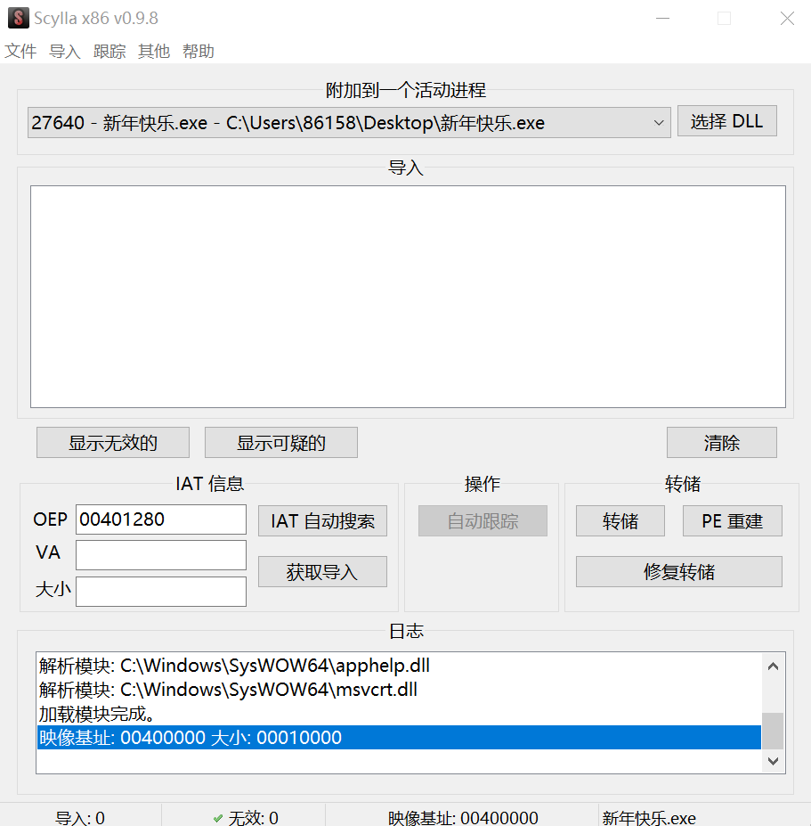
2023.5.27
6.xor
日常查壳，64位的
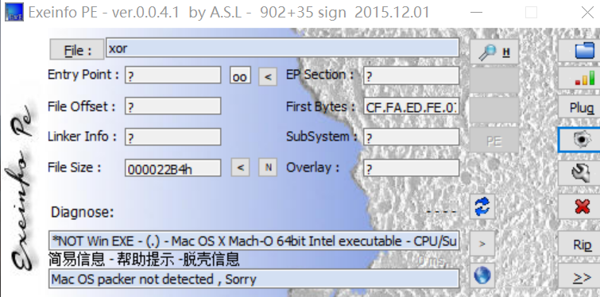
用ida64打开，直接查看字符串，发现关键字符串’Success’，找到该函数，反汇编查看
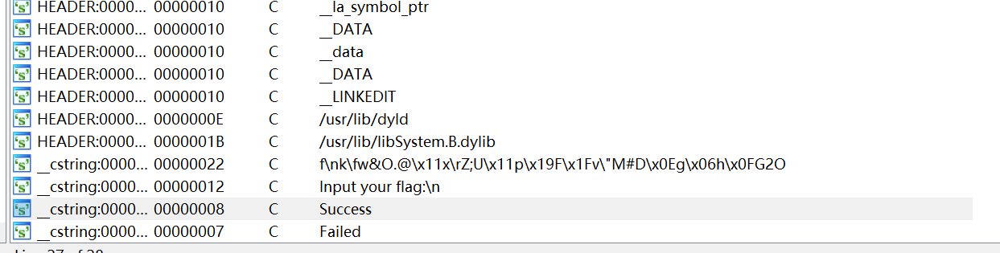
可知，是与global所代表的字符串比较，不过对你输入的字符串要进行异或处理，然后再比较，找global代表的字符串
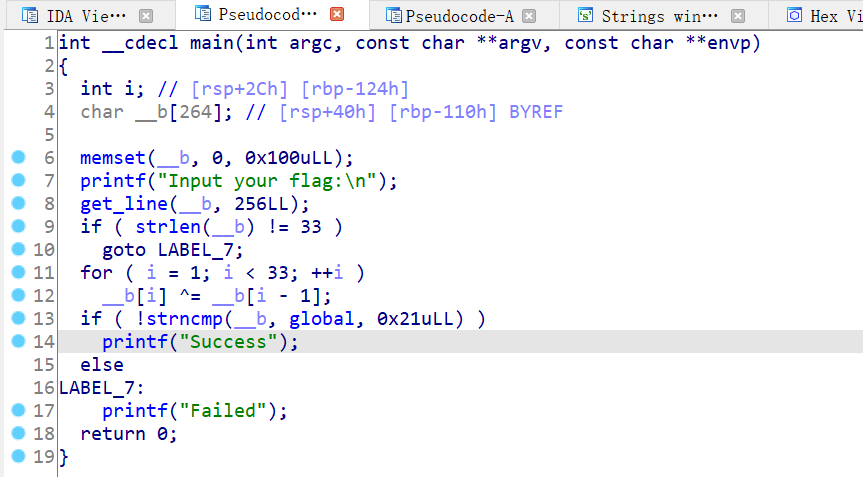
这里是offset aFKWOXZUPFVMDGH，这个是获取它的地址吧，之后进去查看
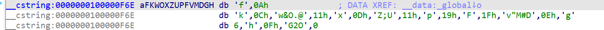
然后编写Python代码，获得flag
1 | s=['f',0xA,'k',0xC,'w','&','O','.','@',0x11,'x',0xD,'Z',';','U',0x11,'p',0x19,'F',0x1F,'v','"','M','#','D',0xE,'g',6,'h',0xF,'G','2','O'] |
7.helloword
题目名称：6176cfc5-d473-4453-a000-29e480ace634.apk
这次给的是apk文件，第一次遇到，我知道可以把后缀改成zip，但是这题没用。然后用ida64打开，选择APK
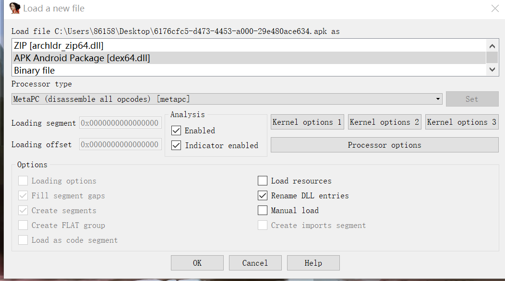
去字符串那里查找，一看太多了，直接搜flag，然后发现，提交
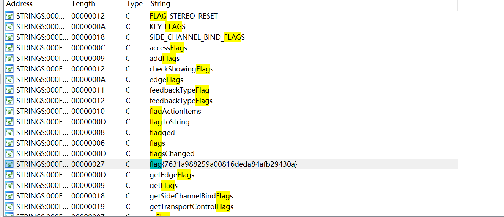
8.reverse3
日常查壳，无壳，32位
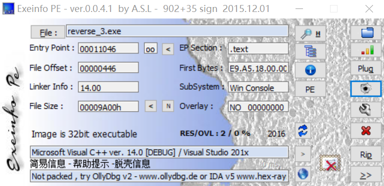
用ida32打开，去看字符串，有base64input，可能和base64编码有关，发现有关flag的，查看
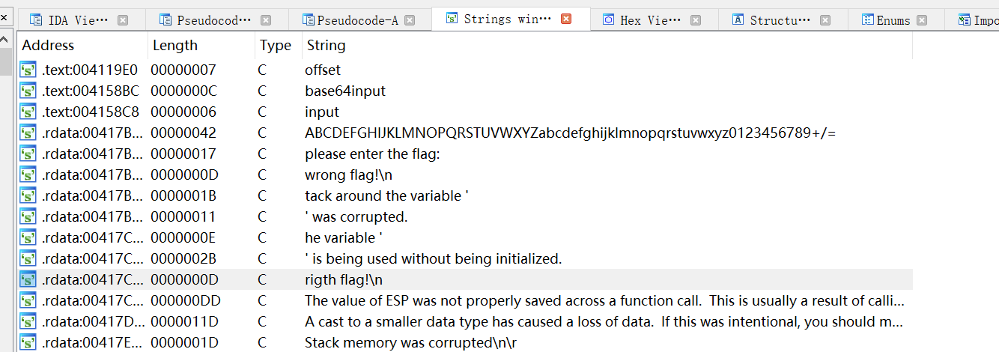
找到函数，反汇编，很容易查到aE3nifih9bCNDh = ‘e3nifIH9b_C@n@dH’，然后上面有一个循环，每个字符加上该字符的下标，上面v4 = sub_4110BE((int)v11, v3, (int)v12);函数应该就是base64加密过程，

先转换回去，再用base64解码
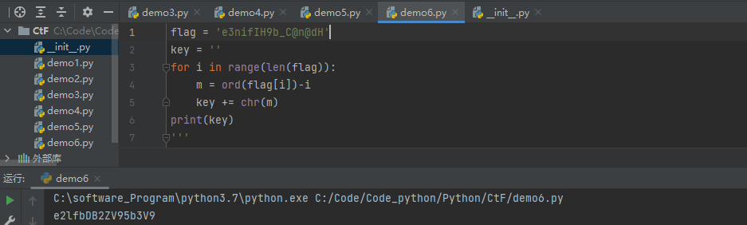
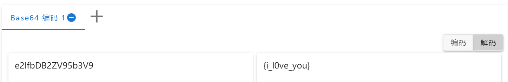
2023.5.28
下面就是用代码解base64。
base64编码原理：
- 得到编码数据的二进制码
如果编码数据为英文：将英文参照ascii码表转换为对应的数字表示形式，再将数字转为二进制
如果编码数据为中文：将中文使用unicode UTF8编码得到二进制
将3个8位的二进制码为一组
转换为4个6位二进制码为一组（不足6位补0，不足4个 最后追加补位符“=”）
对每组二进制码添加2位高位0
将每组转换为十进制
将每组的十进制转换为Base64字符表中对应的字符
1 | flag = 'e3nifIH9b_C@n@dH' |
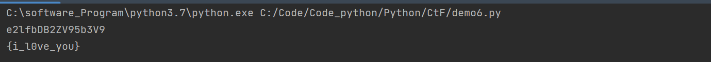
9.不一样的flag
题目：0bf39b5d-5f2f-4095-a921-fb5c20f53f21.zip
日常查壳，32位无壳，用ida32打开
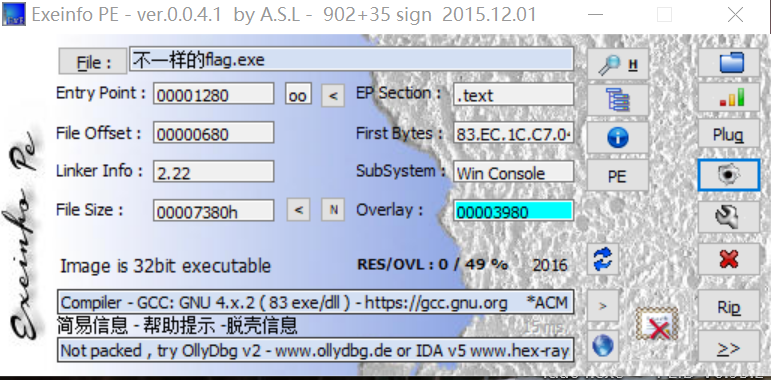
去看字符串，有发现，去看这个函数
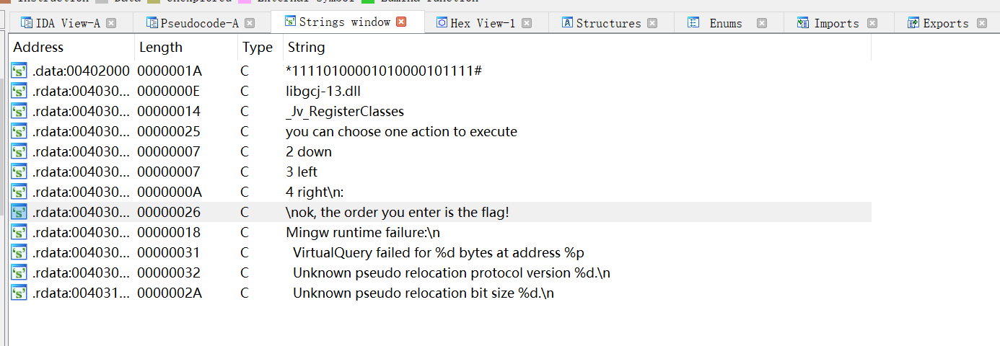
其实刚开始并不是很理解，没有往迷宫那里想，想着读代码，反而就麻烦了，不过代码也看懂了我。
刚开始v3给的内存是29个字节，前25个放了*11110100001010000101111#，而剩下的是纵坐标，而v4是横坐标，来说一下为什么，首先那个up down left right,方位词和位置有关，然后按2是down，v3[25]+1，纵坐标加一，以下类似，其次，看那个for循环，分别是比较的v3[25]和v4，判断有没有超出边界，0-4，这时我们就可以猜出来那25个字符可能是构成了5 * 5的矩阵，也就是所谓的迷宫。然后看最后的if判断，49和35分别代表1和#，而到#结束，也就是走出迷宫。
看一下v7里面的那个算式5 * *(_DWORD )&v3[25] - 41 + v4，v7数组的第一个字节地址=v3数组首字节地址+29+43=41，所以用v7的地址减去41就得到的是v3里面的内容，而用5*纵坐标+横坐标，就是定位当前位置。
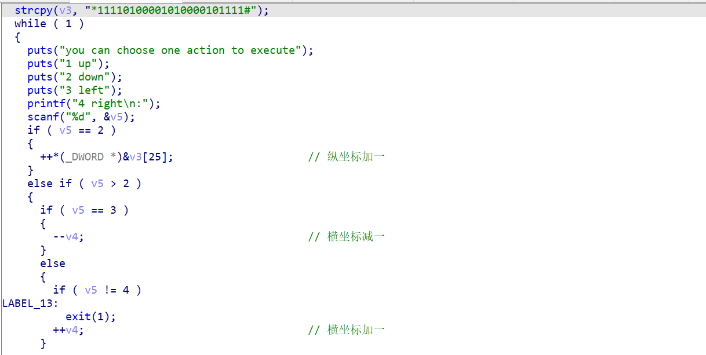
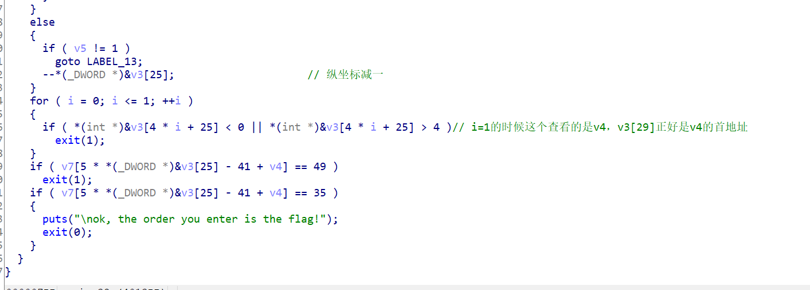
其实就是这样的，踩0，走到#
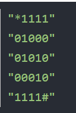
2023.5.29
10.SimpleRev
题目：SimpleRev
日常查壳，64位无壳，ida64打开
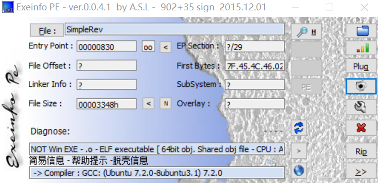
去查字符串，看到有Congratulation!，进去看看
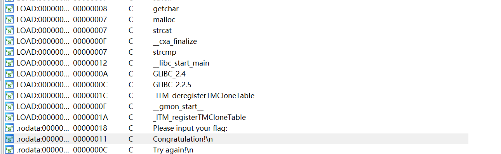
这里的src = 0x534C43444ELL，要转化成字符，因为是小段存储，所以从后往前
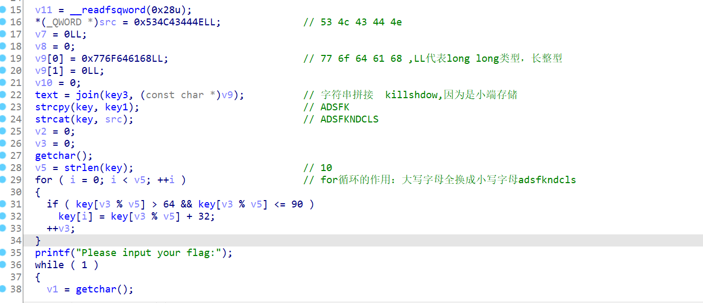
感觉这里表述的不是很明显，因为你不能确定输入的是什么，是字母，大写还是小写，或者其他符号。flag都是大写，难道因为单独写出来了大写的范围？不太清楚
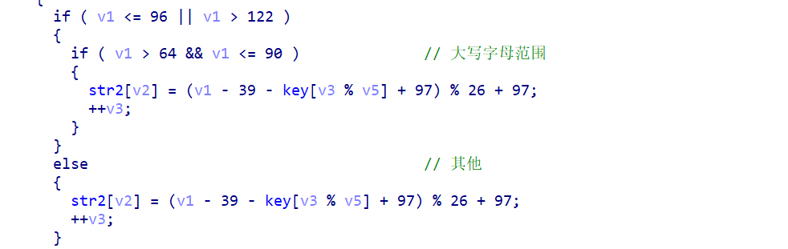
最后写脚本求(这里是按照大写字母来写的)
1 | flag = 'killshadow' |
11.Java逆向解密
这个是.class文件，java逆向。用jd-gui打开，查看源码
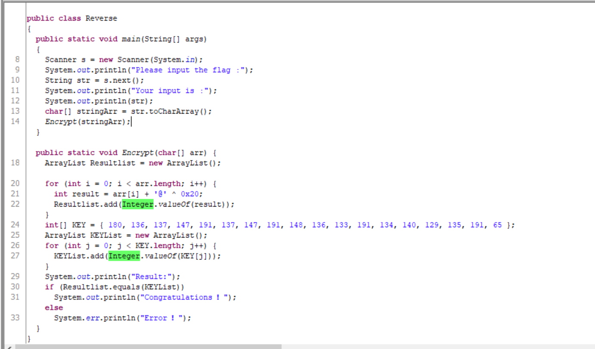
这里我发现那个异或部分可以编译出了问题，实际上应该是 (arr[i] + ‘@’ ) ^ 0x20
然后写源码解：
1 | m = ord('@') |
12.[GXYCTF2019]luck_guy
日常查壳，64位，无壳。用ida64加载
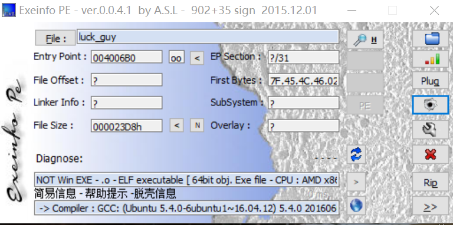
查看字符串，有OK,it`s flag:，进去查看函数
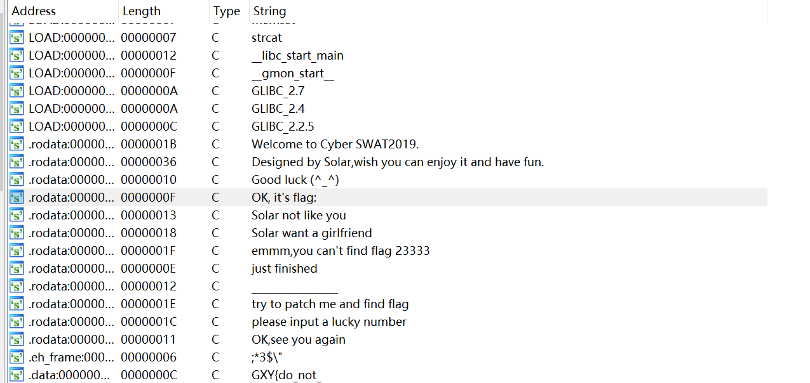
可以知道，flag是s代表的字符串，但是能看出来这个运行是随机的，只有按照一定的顺序运行才能得到完整的s，分析得，先case 4，之后case 5，最后case 1.即可求解
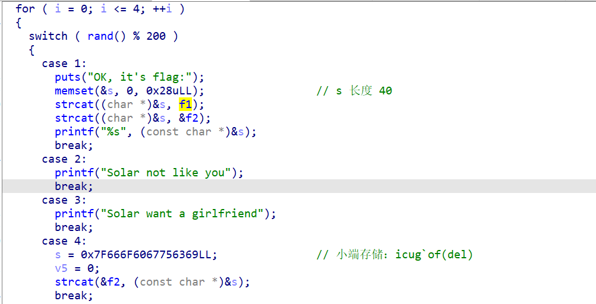
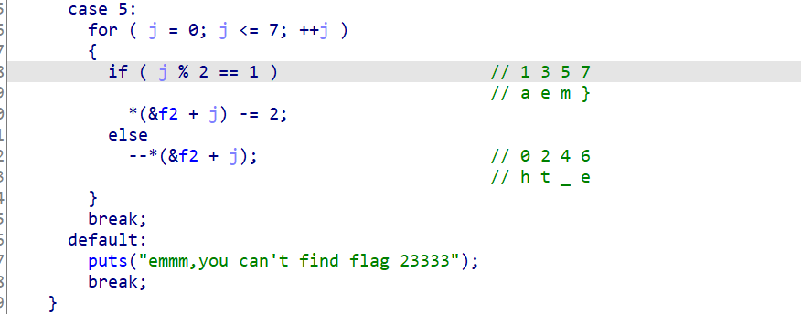
源码的内容也很容易就能分析出来。
2023.5.30
13.[BJDCTF2020]JustRE
日常查壳，32位，无壳，运行了这个可执行文件。用ida32打开。
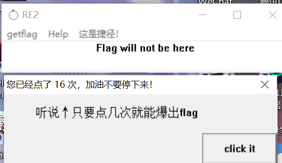
去查看字符串，在末尾看到了一个类似flag的字符串，去看看。
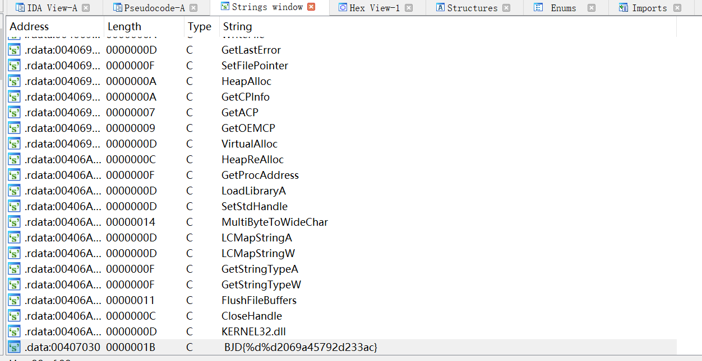
我觉得这个就是flag ，%d%d，换成后面的199990提交，正确
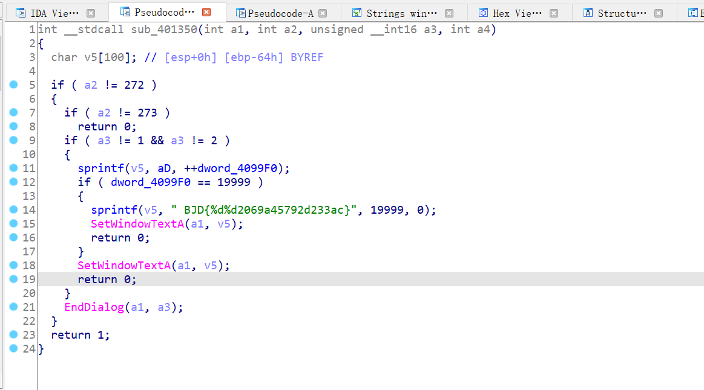
2023.5.31
14.刮开有奖
日常查壳，32位，ida32打开，直接去看字符串，发现了嫌疑字符串，而且还看到上面BCD·····那一串觉得可以和base64有关，进去查看。
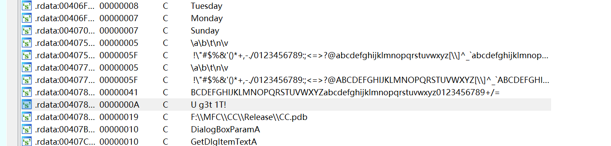
这部分算是初始化，而且得知v22的长度是8(上面给它还定义的很大的空间)，然后就能看到sub_4010F0函数，传的是v12,进去看看。
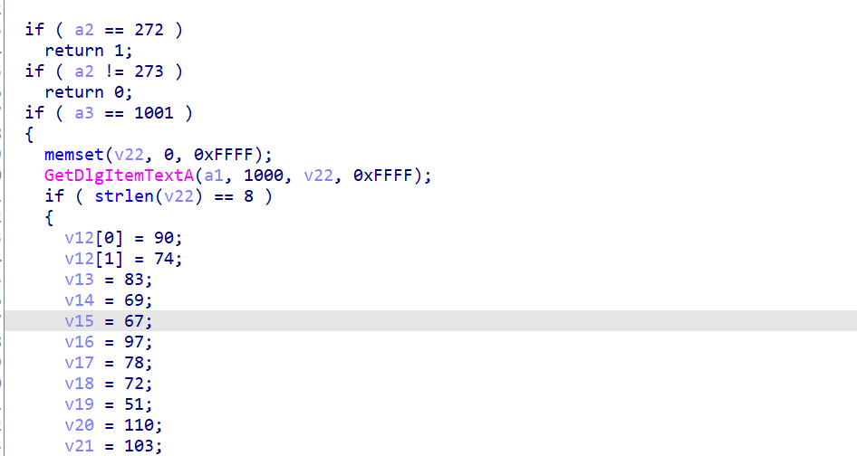
这里有一点要注意，传进来的是v12，但是存储的地址是连续的，所以是可以访问到后面的数据的，比如v13,v14···
然后这里我用C++敲的，会发现v12到v21会变化。字符串就是：3CEHJNSZagn
1 |
|
然后我们在退出这个函数继续往下看，光看这里看不出来什么，对v22没有什么信息，先往下看
这里的话就能根据这个if，推出一些变量代表的值。而且能看出v4==“ak1w”，v5的话推一下下面的判断语句也能推出v5=”V1Ax”;

下面再回到sub_401000那里，这个函数分析挺麻烦的，但是byte_407830指向的是那个BCD·····，所以猜测是base64，然后就能求出v4,v5原本的值，也就是v22[2]-v22[7]，这时候也就知道v22所代表的值UJWP1jMp，我也不清楚为什么这个是flag，提交的的确是对的。
2023.6.1
15.简单注册器
这题给的是apk文件，我用ida32打开了，可以在字符串那里看到flag，但是不能够反汇编，分析难度加大。然后上网搜了一些关于apk文件的静态分析方法，说的挺模糊的，然后就让我瞎搞出来了。先把apk文件的后缀改成zip，打开之后就有一个classes.dex文件（Dalvik Executable）,这里面有应用程序的java文件。
然后用Apktool Box工具把dex转成jar文件，之后我是用jd-gui工具打开jar文件，进去查看。
一下就看到了flag字样，然后查看代码，第一个if我还想了半天，之后发现可以不用管，因为刚开始的那个初始化并不知道，而且第二个if也给了定义，然后直接在第二个if处开始分析，代换一下就可以了。然后就是while处的转换，可以看出是前后转换位置，最后写python代码实现。
代码如下：
1 | flag = list("dd2940c04462b4dd7c450528835cca15") |
2023.6.2
16.[GWCTF 2019]pyre
给的是一个pyc文件，上面在知识点那里解释了一下。这里我用工具将pyc文件编译成可以读的高级语言（Easy Python Decompiler v1.3.2）得到了如下代码：
可知flag就是我们输入的内容，然后只给了经过变换之后的输入，所以就要逆变换，第一个是异或，第二个部分要注意取余，不确定数字范围是在128之内，还是128的一倍，所以就要试，这里我是判断，如果code[i]-i<0,那么就给code[i]+128-i，代码如下：
1 | code = ['\x1f','\x12','\x1d','(','0', '4', '\x01', '\x06', '\x14', '4', ',', '\x1b', 'U', '?', 'o', '6', '*', ':', '\x01', 'D', ';','%', '\x13'] |
17.[ACTF新生赛2020]easyre
日常查壳，发现是upx壳，32位。和上面的第五题新年快乐差不多，手动脱壳我试了上面写的办法可以用，也可以自动脱壳，更快一些。
然后放到ida32查看，去看字符串，发现关键字符串，You are correct! ， 进去查看。而且上面还有一串字符串，这里会有一个坑，我当时没注意到，以为这个字符串就是看到的这个。
然后就可以看到主函数，qmemcpy就是一个复制函数，把后面的字符串把某长度内复制给另一个。但是这个字符串我就看了挺久，当我把鼠标点这个字符串的时候显示char[15]，这个长度是15?但是v4的长度不是12吗，然后就开始猜测怎么回事，最后我看到了，\这个是用来转义的，看下一张图片
看第一个if，ASCII是ACTF{}，所以我猜测这段有可能和flag有关，在往下那个for循环，可以知道这是根据v4然后把v5，v6,v7,v8,v9,v10推出了（这几个加一起长度12），看_data_start_这个字符串，很坑，没看到上面的7Eh，
之后就可以写代码
1 | word = ['~' , '}', '|', '{', 'z', 'y', 'x', 'w', 'v', 'u', 't', 's', 'r', 'q', 'p', 'o', 'n', 'm', 'l', 'k', 'j', 'i', 'h', 'g', 'f', 'e', 'd', 'c', 'b', 'a', '`', '_', '^', ']', '\\', '[', 'Z', 'Y', 'X', 'W', 'V', 'U', 'T', 'S', 'R', 'Q', 'P', 'O', 'N', 'M', 'L', 'K', 'J', 'I', 'H', 'G', 'F', 'E', 'D', 'C', 'B', 'A', '@', '?', '>', '=', '<', ';', ':', '9', '8', '7', '6', '5', '4', '3', '2', '1', '0', '/', '.', '-', ',', '+', '*', ')', '(', "'", '&', '%', '$', '#', ' ', '!', '"'] |
20230603
18.findit
把apk文件后缀改成zip，用Apktool_Box工具把classes.dex编译成jar文件，再用JavaDecomplier反编译打开，能找到如图代码。
找到了java代码，但是不好确实用来比较的字符串是什么，然后就看到了(EditText)findViewById(2131034174)，我看看能不能在这里下手。是在Android开发中的一个方法调用，它的目的是查找布局文件中ID为2131034174的EditText控件，并将其返回给调用者。然而我并没用找到关键信息。最终find不出来
然后用ApkIDE工具打开，在MainActivity那里有两串十六进制数字，因为上面找到了源码就想根据代码看看能不能敲出来，也就没有看字符串代表的什么。最后逻辑比较乱，没弄出来。看了网上的答案，先把那个字符串敲出来，然后能看猜出来是凯撒加密移动10位（真扯），在再看上面图片的关系还是不懂
又搜了一些，有些明白了
20230604
[ACTF新生赛2020]rome
日常查壳，32位无壳。ida32查看，去字符串那里查看，发现You are correct!，进去查看，最后发现如下函数
上面那个if判断没多大用，不过内容是ACTF{}，也能看出来flag就是这个中间的内容(v7-v10)，然后看第一个while，就是字符串变换，但是那个v1我很疑惑，再看我就有一些清楚了，占的内存大小不同，int 占4位，而char是1位，所以在第一个while那里，v1的下标我还以为会超出范围，实际上并没有
第二个while是来判断变换后的v1和v12是否相等，看到这里就能知道flag是v1之前的内容，写如下代码
1 | key = ['Q','s','w','3','s','j','_','l','z','4','_','U','j','w','@','l'] |
20230605
rsa
打开压缩包是两个文件
网上搜了一些资料之后明白，enc文件是加密之后的，而key文件里面有公钥信息，记事本打开key文件可以看到，我还以为是base64加密，显然没那么简单。之后看出来是我不会的题目，就看了其他人的的过程
在这个在线网站这网站将上面的代码放进去，就可以得到如下，模数就是N，指数也就是公钥，之后就是N的分解，先把这个数改成10进制，然后用这个工具网站转换
可以得到p,q
下面就是用已知的N，E，p,q来求出私钥，然后再解密
1 | import gmpy2 |
结果如下
20230606
[FlareOn4]login
打开压缩包，txt文件里面没多大用，打开html文件，让你输入flag，随便输入一个，显示错误。Ctrl+u查看源代码，
先把你输入的flag经过变换，搜了一下就是Rot13，再和下面的字符串比较，所以我直接用rot13解，就出来了
20230607
CrackRTF
日常查壳，32位无壳，ida32打开，找到关键函数，sub_40100A这个函数就是对v8的操作，进去查看
这里能看出来是Hash函数，但是不清楚是哪种类型，网上搜了，看CryptCreateHash()函数里面的32772转成16进制0x8004，查看官方文档可知，
如图可知是SHA1系列

代码如下
1 | import hashlib |
可以得到 v9=123321@DBApp，那么输入的就是123321
然后分析可得另一个关键函数是sub_401019()，同理32771= 0x8003查阅可知是MD5加密，这次没用代码，因为v6的输入只有长度限制没有内容限制，MD5在线，解出来~!3a@0123321@DBApp
输入这两次密码之后会在同一个文件夹下生成一个rtf文件，打开就有了flag
20230608
WUSTCTF2020]level1
打开压缩包，一个txt文件，里面有19行数字，另一个不知道什么文件
查一下壳，64位，直接放到ida64里面，先看了字符串没有特殊的字符串，然后我就看了main函数，
可以看出来打开了一个flag文件，存到了ptr里面，这个应该就是需要的flag。然后下面的for循环可以看出来是对字符的操作，源码：
1 | key = [198,232,816,200,1536,300,6144,984,51200,570,92160,1200,565248,756,1474560,800,6291456,1782,65536000] |
正解
20230609
[GUET-CTF2019]re
日常查壳，64位，upx的壳，这里用UPX_UI解压，x64dbg打不开。
之后放到ida64查看，先看字符串，第一行就是input your flag:直接进去查看
可以看到关键是那个sub_4009AE进去查看，就是很多判断，转化
转化出来，不过少了一个，还有16，17顺序调换了，看了网上的[6]爆破 1
20230610
sub_411221—–
~sub_413CC8
sub_13C80,
20230630
期末考试了